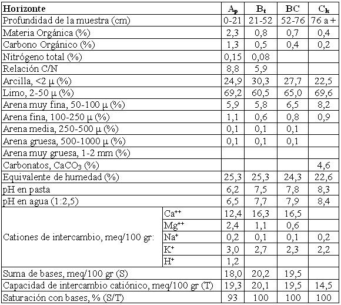

Argiustol típico, limosa fina, mixta, térmica
Capacidad de uso: IIIc
Es un suelo profundo, moderadamente bien drenado, desarrollado a partir de materiales loéssicos, de textura franco limosa, vinculados a un paisaje de planos chatos ligeramente deprimidos. Los primeros 21 cm (horizonte A) son de color pardo grisáceo oscuro, de textura franco limosa y estructura en bloques moderados. Luego pasa a un horizonte más arcilloso (Bt textural), que se extiende hasta los 52 cm de profundidad, de textura franco arcillo limosa y estructura en prismas moderados, con barnices en la cara de los agregados y escasos moteados, lo que indica un exceso de agua en el perfil en algunos períodos. La transición al material originario (horizonte C) es gradual, encontrándose éste a una profundidad de 76 cm; se trata de un material franco limoso, masivo y con abundante calcáreo pulverulento diseminado en la masa del suelo. Los suelos de esta Serie muestran una moderada limitación climática, derivada del régimen de precipitaciones bajo el cual se encuentra. Estos suelos no presentan en general otros impedimentos de orden físico-químico que condicionen el crecimiento de las plantas. La reacción en todo el perfil es ligeramente ácida a neutra y está bien provisto de materia orgánica.
Descripción del perfil típico:
El perfil que representa el modal, fue descrito a 13 Km al Oeste de la localidad de Matorrales, departamento Río Segundo, provincia de Córdoba.
Ap 0-21 cm; color en húmedo pardo grisáceo oscuro a pardo grisáceo muy oscuro (10YR3,5/2); franco limoso; estructura en bloques subangulares medios moderados; friable en húmedo; ligeramente plástico; ligeramente adhesivo; límite inferior abrupto, suave.
Bt 21-52 cm; color en húmedo pardo oscuro (7,5YR3/2); franco arcillo limoso; estructura en prismas irregulares medios moderados y bloques subangulares medios moderados; friable en húmedo; ligeramente plástico; ligeramente adhesivo; comunes barnices húmicos-arcillosos finos; moteados escasos, finos y débiles; límite inferior gradual y suave.
BC 52-76 cm; color en húmedo pardo a pardo oscuro (7,5YR4/4); franco limoso a franco arcillo limoso; estructura en prismas irregulares y bloques subangulares medios moderados; friable en húmedo; ligeramente plástico; ligeramente adhesivo; escasos barnices húmicos-arcillosos finos; moteados escasos, finos y débiles; límite inferior abrupto, suave.
Ck 76 cm a +; color en húmedo pardo (7,5YR4,5/4); franco limoso; masivo; muy friable en húmedo; no plástico; no adhesivo; abundante calcáreo pulverulento en la masa del suelo.
Cuadro Nº26
Datos analíticos Serie MATORRALES
Situación: Latitud: 31°42’29”S Longitud: 63°39’O Altitud: 276 m.s.n.m.

|